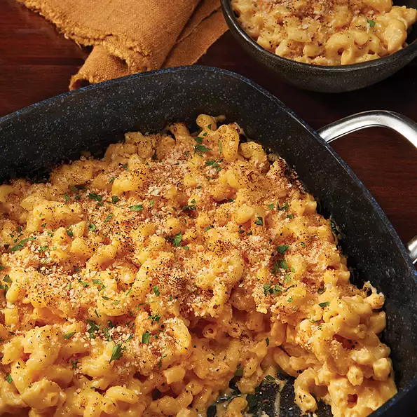

Mac and Cheese

Nothing is better than homemade classic Macaroni and Cheese!
A classic Macaroni and Cheese recipe including three different cheese's made by T-fal
Ingredients
- 1 (16 ounce) Package of Elbow Macaroni
- 4 tablespoons Butter
- 4 tablespoons Flour
- 2 cups Whole Milk
- 8 ounces Shredded Cheddar Cheese
- 4 ounces Shredded Swiss Cheese
- 4 ounces Velveeta Processed Cheese
- 1/2 cup Panko Bread Crumbs
Directions
- Preheat oven to 350 degrees F.
- Bring a large pot of lightly salted water to a boil. Cook elbow macaroni in the boiling water, stirring occasionally, until tender yet firm to the bite, about 8 minutes. Drain.
- Melt the butter in the bottom of an oven-proof fry pan. Add the flour and stir over heat until just beginning to brown - don't let it get too brown. Take it off the heat and stir in about 1 cup of milk until the butter and flour mixture is fully incorporated. Put it back on the heat and simmer until just beginning to thicken, about 5 minutes. Add the rest of the milk; stir to fully incorporate.
- Add all of the cheeses and stir to melt. Once melted, add the cooked macaroni. Stir to mix.
- Cover the top of the mac and cheese with panko crumbs and place the pan in the oven. Bake for about 20 minutes, or until it is bubbling and the bread crumbs are slightly browned.
Return To Homepage